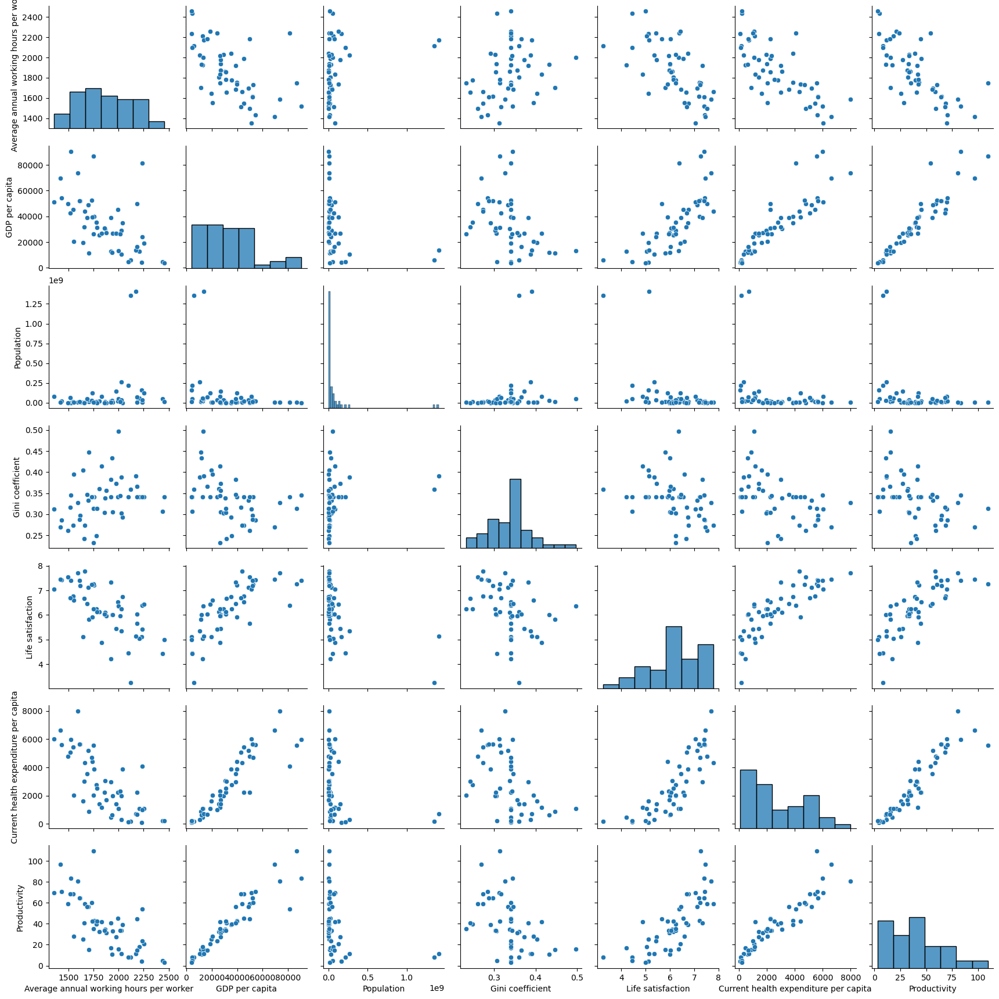
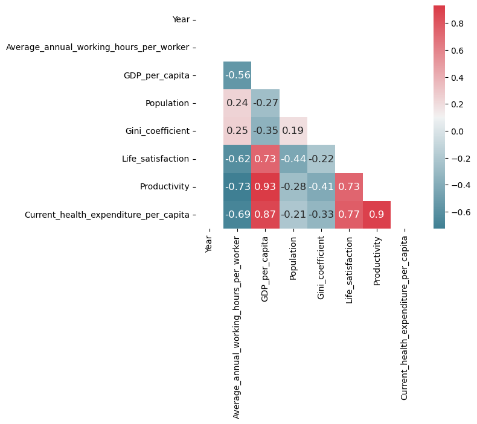
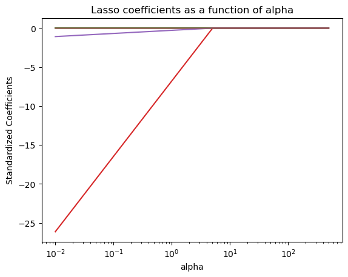

The project idea is based on a CNN news article regarding working hours in South Korea (https://edition.cnn.com/2018/07/02/health/south-korea-work-hours/index.html). It sais that South Korea cutted its work limit from 68 hours a week to 52. A comparison of “Average annual hours actually worked per worker” by country (https://stats.oecd.org/Index.aspx?DataSetCode=ANHRS#) shows that in 2021 South Korea had the 4th highest amount of hours of 35 countries tracked by OECD. The average was 1.915 hours where Germany worked the least with 1.349 hours.
South Korea and Germany are both known for strong economies but obviously behave different regarding working hours. Due to this fact the project group (herein, “we”) decided to investigate the subject of labor productivity. Productivity is commonly defined as a ratio between the volume of output and the volume of inputs. In other words, it measures how efficiently production inputs, such as labour, is used in an economy to produce a given level of output. Hence it is a key source for economic growth and affects our future worklife.
Research Questions
Does the longer average annual working hours increase labor productivity?
What is the most related factor in improving labor productivity?
Annual working hours per worker
GDP of the country
Gini coefficient of country
Life satisfaction level of worker
Amount of health expenditure of worker
Please find the literature, our research question is motivated by, in the sources.
Hypotheses
There is no correlation between working hours and labor productivity. (= Null hypothesis of our first research question)
Life satisfaction level of country is the most related factor (regarding factors listed above) in improving labor productivity.
Data description
The initial data set consinst of 3.471 observations with a time range from 1950 to 2017. Due to fact that time series analysis is not the goal of this project, the data set was flagged on the latest observations of 2017. The adjusted data set consinst of 66 observations, 11 columns.
Variables description
First four columns include four spatial and temporal dimensions: - Continent: Continent name - Country: Country name - Country Code: Country codes by alpha-3 - Year: Calendar Year - Only 2017 data was considered in this analysis to satisfy the independence condition
At least six columns have useful and unique numeric predictors, and each column contains different numeric informations that could be independent variable. There is one variable that can be defined as a dependent variable to perform an analysis based on the research problem described below. - Resonable dependent variable: Labor productivity: Productivity is measured as gross domestic product (GDP) per hour of work. This data is adjusted for inflation and for differences in the cost of living between countries. - Independent variable - Average annual working hours per worker: Working hours are the annual average per worker - Gross domestic product (GDP) per capita: GDP per capita by country - Population: Population by country - Gini coefficient: Determinates the level of income inequality (0 = perfect equality / 1 = maximal inequality) - Life safisfaction: The level of life satisfaction for each country has been measured by survey: “Please imagine a ladder, with steps numbered from 0 at the bottom to 10 at the top. The top of the ladder represents the best possible life for you and the bottom of the ladder represents the worst possible life for you. On which step of the ladder would you say you personally feel you stand at this time?” - Current health expenditure per capita: Healthcare expenditure per capita is measured in current international-$, which adjusts for price differences between countries.
Please find the source description in the Appendix.
Limitations
The amount of observations is very small. The sample size could undermine the validity of the model results.
As Labor productivity is a figure calculated from Average annual working hours per worker and GDP it could cause multicollinearity.
The following table (Table 1) shows the first 10 observations of the data set consolidated from the exports:
Code
# Setupimport numpy as npimport pandas as pdimport altair as altimport matplotlib.pyplot as pltimport joblibfrom sklearn.model_selection import train_test_splitfrom sklearn.model_selection import cross_val_scorefrom sklearn.linear_model import LinearRegressionfrom sklearn.neighbors import KNeighborsRegressorfrom sklearn.metrics import r2_scorefrom sklearn.metrics import mean_squared_errorfrom sklearn.metrics import mean_absolute_errorfrom sklearn.preprocessing import StandardScalerfrom sklearn.linear_model import Lassoimport seaborn as sns # Python data visualization library based on matplotlib. Used pairplot function in data exploration and heatmap function for visualization of multicollinearity check# statmodels - supports specifying models using R-style formulas and pandas DataFramesfrom statsmodels.stats.outliers_influence import variance_inflation_factor # Measure for the increase of the variance of the parameter estimates if an additional variable, given by the design matrix is added to the linear regression. It is a measure for multicollinearity of the design matrixfrom statsmodels.tools.tools import add_constant # Add a column to an arrayfrom statsmodels.formula.api import ols # API that focuses on models and the most frequently used statistical test, and tools for Ordinary Least Squares regression
Table 1: Overview Dataframe
Code
# import data and first view on dataframedf = pd.read_csv('https://raw.githubusercontent.com/jh294/project/main/data/raw/Labor_Productivity_Analysis_final.csv',sep=';',decimal=',')df = df.rename(columns = {'gini_coefficient':'Gini coefficient'})df.head(10)
Continent
Country
Code
Year
Average annual working hours per worker
GDP per capita
Population
Gini coefficient
Life satisfaction
Productivity
Current health expenditure per capita
0
Americas
Argentina
ARG
2017
1691.5363
23272.18
44054616
NaN
6.085561
30.955460
2470.11
1
Oceania
Australia
AUS
2017
1731.4943
52536.19
24590336
NaN
7.233995
60.341679
4715.83
2
Europe
Austria
AUT
2017
1613.0519
51954.28
8797497
0.297376
7.195361
64.780170
5641.18
3
Asia
Bangladesh
BGD
2017
2232.3542
4112.70
161793968
NaN
5.114217
4.307637
101.18
4
Europe
Belgium
BEL
2017
1544.2690
45150.20
11384491
0.273880
6.772138
68.516521
5450.48
5
Americas
Brazil
BRA
2017
1709.4856
14284.61
208504960
0.533340
6.451149
19.188294
1375.66
6
Europe
Bulgaria
BGR
2017
1643.5475
19579.83
7182430
0.403790
5.108438
25.392122
1607.71
7
Asia
Cambodia
KHM
2017
2455.5508
3950.93
15830694
NaN
4.998285
3.022650
224.81
8
Americas
Canada
CAN
2017
1696.4624
48902.64
36554344
0.333082
7.109076
56.255718
5208.72
9
Americas
Chile
CHL
2017
1974.0000
22864.05
18368582
0.444410
5.942250
27.260791
2219.14
As explained in the variables description above, we set different variables as independent variables. In setting variables, we collected and selected factors that might be related to labor productivity, and by doing so we attempted to identify which independent variables were most closely related to labor productivity, our response variable. For example, GDP is widely believed to be closely related to labor productivity, but it is difficult to answer the question of whether this factor has the greatest influence among the productivity-related variables. Therefore, further analysis can identify the relationship between this variable and the response variable.
Table 2: Data information
Code
df.info()
<class 'pandas.core.frame.DataFrame'>
RangeIndex: 66 entries, 0 to 65
Data columns (total 11 columns):
# Column Non-Null Count Dtype
--- ------ -------------- -----
0 Continent 66 non-null object
1 Country 66 non-null object
2 Code 66 non-null object
3 Year 66 non-null int64
4 Average annual working hours per worker 66 non-null float64
5 GDP per capita 66 non-null float64
6 Population 66 non-null int64
7 Gini coefficient 48 non-null float64
8 Life satisfaction 65 non-null float64
9 Productivity 65 non-null float64
10 Current health expenditure per capita 64 non-null float64
dtypes: float64(6), int64(2), object(3)
memory usage: 5.8+ KB
Data corrections
As we can already investigate null values in table 1 and table 2, first of all we check the dataframe for these cases.
Table 3: Null values
Code
# Check for missing values for each variable.print(df.isnull().sum())
Continent 0
Country 0
Code 0
Year 0
Average annual working hours per worker 0
GDP per capita 0
Population 0
Gini coefficient 18
Life satisfaction 1
Productivity 1
Current health expenditure per capita 2
dtype: int64
This information reflects that our data set contains some null values we need to handle with. As a rule of thumb a linear regression with one dependent and one independent variable requires at least 30 observations. Hence it can be assumed that the number of observations is sufficient for a simple linear regression model. Regarding a multiple linear regression model for each additional indipendent variable added to the equation an additional 10 observations are required (https://home.csulb.edu/msaintg/ppa696/696regmx.htm#::text=Regression%20with%20only%20one%20dependent,variable%20added%20to%20the%20equation). In our case, a dataset of at least 80 observations would be required to take every independent variable into account. For this reason we cannot afford to eliminate the observations with missing values. Alternativley we will appropriately replace the missing values with mean or median. Despite the data correction we furthermore need to think about eleminating isolated variables of our multiple linear regression model.
Additionally we were thinking about a method called oversampling to add artificial samples. However, research on this subject revealed, that this method only works for categorical variables to adjust the class distribution of a data set. Hence it is not practicable for this project.
To deal with existing missing values we had to figure out what is a better measure of the central tendency of data and use that value to appropriately replace missing values. We generated distribution plots to decide which techniques to use. - Outliers data points will have a significant impact on the mean and hence, in such cases, it is not recommended to use the mean for replacing the missing values. - For symmetric data distribution, one can use the mean value for imputing missing values.
Please find the additional boxplot visualization in the Appendix.
Chart 1: Distribution Splot
Code
alt.Chart(df).mark_bar().encode( alt.X(alt.repeat("column"), type="quantitative", bin=True), y='count()',).properties( width=150, height=150).repeat( column=['Productivity', 'Average annual working hours per worker', 'GDP per capita', 'Population','Gini coefficient','Life satisfaction','Current health expenditure per capita'])
c:\Users\ji_so\anaconda3\envs\stats\lib\site-packages\altair\utils\core.py:317: FutureWarning: iteritems is deprecated and will be removed in a future version. Use .items instead.
for col_name, dtype in df.dtypes.iteritems():
Exploration of data distribution with histograms shows that all variables are unimodel. Productivity, GDP per capita and Current health expenditure per capita are right skrewed variables whereas the other variables ara symmetry.
Gini coefficient, Life satisfaction, Productivity and Current health expenditure per capita have no symmetric data distribution. Hence we replace the missing values with median.
Code
df['Gini coefficient'] = df['Gini coefficient'].fillna(df['Gini coefficient'].median())df['Life satisfaction'] = df['Life satisfaction'].fillna(df['Life satisfaction'].median())df['Productivity'] = df['Productivity'].fillna(df['Productivity'].median())df['Current health expenditure per capita'] = df['Current health expenditure per capita'].fillna(df['Current health expenditure per capita'].median())
As we adjusted all variables with null values, we make a final check.
Table 4: Check adjusted null values
Code
#checkprint(df.isnull().sum())
Continent 0
Country 0
Code 0
Year 0
Average annual working hours per worker 0
GDP per capita 0
Population 0
Gini coefficient 0
Life satisfaction 0
Productivity 0
Current health expenditure per capita 0
dtype: int64
There is no missing value anymore in our data, but we need an additional final step in our data correction. As we want to undergo a lasso regression model we need at least one categorical variable. Hence we change the type of continent from object to category. Table 5 gives information of the adjusted dataset after data corrections.
Code
# variable Continent is categoricaldf['Continent'] = df['Continent'].astype('category')
Code
df.info()
<class 'pandas.core.frame.DataFrame'>
RangeIndex: 66 entries, 0 to 65
Data columns (total 11 columns):
# Column Non-Null Count Dtype
--- ------ -------------- -----
0 Continent 66 non-null category
1 Country 66 non-null object
2 Code 66 non-null object
3 Year 66 non-null int64
4 Average annual working hours per worker 66 non-null float64
5 GDP per capita 66 non-null float64
6 Population 66 non-null int64
7 Gini coefficient 66 non-null float64
8 Life satisfaction 66 non-null float64
9 Productivity 66 non-null float64
10 Current health expenditure per capita 66 non-null float64
dtypes: category(1), float64(6), int64(2), object(2)
memory usage: 5.6+ KB
alt.Chart(df).mark_bar().encode( y=alt.X('Continent', sort='-x'), # sort x=alt.Y('Productivity'), color=alt.Color('Continent', legend=alt.Legend(title="Continent by color")))
c:\Users\ji_so\anaconda3\envs\stats\lib\site-packages\altair\utils\core.py:317: FutureWarning: iteritems is deprecated and will be removed in a future version. Use .items instead.
for col_name, dtype in df.dtypes.iteritems():
#case by case viewalt.Chart(df).mark_circle(size=100).encode( x='Average annual working hours per worker:Q', y='Productivity:Q', color=alt.Color('Continent', legend=alt.Legend(title="Continent by color"))).interactive()
As we can see in our scatterplot, we can assume that there is a negative, linear association between these two variables.
Research Questions
Does the longer average annual working hours increase labor productivity?
What is the most related factor in improving labor productivity?
Annual working hours per worker
GDP of the country
Gini coefficient of country
Life satisfaction level of worker
Amount of health expenditure of worker
Please find the literature, our research question is motivated by, in the sources.
Hypotheses
There is no correlation between working hours and labor productivity. (= Null hypothesis of our first research question)
Life satisfaction level of country is the most related factor (regarding factors listed above) in improving labor productivity.
Methodology
Evaluation of our first hypothesis
Null hypothesis: There is no correlation between working hours and labor productivity.
Alternative hypothesis: There is a correlation between working hours and labor productivity.
For our first hypothesis we only have to take the variables Labor productivity and average annual working hours into account. Form the EDA we assumed a linear relationship of these two variables. Hence we use a single linear regression model for evaluation. With this simple method, we can first exclude all unnecessary variables so that we can look at how our independent variable (Average annual working hours) affects the dependent variable (Labor productivity).
Single linear regression model
Define X and y variable for later use
Code
# define outcome variable as y_labely_label_H1 ='Productivity'# select featuresX_H1 = df[["Average annual working hours per worker"]]# create responsey_H1 = df[y_label_H1]
Data Splitting
Splitting into train and test data and investigating
We make a copy of the training data since we don’t want to alter our data during data exploration. We will use this data for our exploratory data analysis.
We cannot ensure how well our model will perform. Therefore, as a better option, we will split our data into two sets: the training set and the test set, and then perform k-fold cross-validation. In k-fold cross-validation, the data set is split into k (here k = 5) iterations into training and test data sets. From each training and testing set we can get the error rate, so with this value we can observe how well our model performs on instances it has never seen before. If the training error is small (i.e. our model makes few errors in the training set) but the generalization error is high, this means that our model is overfitting the training data.
# store cross-validation scoresdf_scores_H1 = pd.DataFrame({"lr": scores_H1, "knn": scores2_H1})# reset index to match the number of foldsdf_scores_H1.index +=1# print dataframedf_scores_H1.style.background_gradient(cmap='Blues')
c:\Users\ji_so\anaconda3\envs\stats\lib\site-packages\altair\utils\core.py:317: FutureWarning: iteritems is deprecated and will be removed in a future version. Use .items instead.
for col_name, dtype in df.dtypes.iteritems():
Code
df_scores_H1.describe().T
count
mean
std
min
25%
50%
75%
max
lr
5.0
284.314577
242.195193
77.597734
126.544454
136.651296
456.552360
624.22704
knn
5.0
380.120937
289.762629
75.916928
111.456937
385.322855
593.315306
734.59266
The difference in performance between the two models is relatively small. -> Choose linear regression
Final Training
Code
# Fit the modelreg_H1.fit(X_train_H1, y_train_H1)
LinearRegression()
In a Jupyter environment, please rerun this cell to show the HTML representation or trust the notebook. On GitHub, the HTML representation is unable to render, please try loading this page with nbviewer.org.
Regression equation - The intercept, 163,02, is the average predicted labor productivity that we assume if the average working hours per worker is 0. To find the average labor productivity with average working hours per worker, we simply plug in average working hours per worker=1 to obtain 163,02 - 0,06613 * 1 = 162,95.
OLS Regression Results
==============================================================================
Dep. Variable: Productivity R-squared: 0.526
Model: OLS Adj. R-squared: 0.519
Method: Least Squares F-statistic: 71.03
Date: Sun, 15 Jan 2023 Prob (F-statistic): 5.69e-12
Time: 21:03:02 Log-Likelihood: -277.66
No. Observations: 66 AIC: 559.3
Df Residuals: 64 BIC: 563.7
Df Model: 1
Covariance Type: nonrobust
===========================================================================================================
coef std err t P>|t| [0.025 0.975]
-----------------------------------------------------------------------------------------------------------
Intercept 162.6904 14.801 10.992 0.000 133.122 192.258
Average_annual_working_hours_per_worker -0.0664 0.008 -8.428 0.000 -0.082 -0.051
==============================================================================
Omnibus: 15.301 Durbin-Watson: 1.974
Prob(Omnibus): 0.000 Jarque-Bera (JB): 23.925
Skew: 0.828 Prob(JB): 6.38e-06
Kurtosis: 5.440 Cond. No. 1.37e+04
==============================================================================
Notes:
[1] Standard Errors assume that the covariance matrix of the errors is correctly specified.
[2] The condition number is large, 1.37e+04. This might indicate that there are
strong multicollinearity or other numerical problems.
Here, the p-value is statistically significant. It shows strong proof against the null hypothesis because since the probability is less than 5%. Based on this, we accept the alternative hypothesis and dismiss the null hypothesis. - Accepted hypothsis: There is a correlation between working hours and labor productivity.
However, from this result we can also see that there is strong multicollinearity or other numerical problems in this model. In the case of multicollinearity, this reduces the accuracy of the estimated coefficients, which weakens the statistical power of your regression model. Therefore we might not be able to trust the p-values to identify independent variables that are statistically significant.
Code
df.columns = [c.replace('_',' ') for c in df.columns]
Evaluation of our second hypothese with using various models
Our second hypothesis relates to more than one independent variable. Therefore, we will use two different models to evaluate this hypothesis: Multiple linear regression & Lasso regression
Life satisfaction level of country is the most related factor (regarding all existing factors) in improving labor productivity.
Multiple linear regression
We extend the simple linear regression with additional predictor variables and stick to one response variable. We want to investigate the relationship between those predictor variables and the response variable. The selection of the variables for the model will be done by evaluating the adjusted r2, as it describes the variation of outcome explained by a predictor.
Variable lists
We define X and y variables: - X = “Average annual working hours per worker”, “GDP per capita”, “Population”, “Gini coefficient”, “Life satisfaction”, “Current health expenditure per capita” - y = “Productivity”
Code
# define outcome variable as y_labely_label ='Productivity'# select featuresfeatures = ["Average annual working hours per worker", "GDP per capita","Population","Gini coefficient","Life satisfaction","Current health expenditure per capita" ]# create feature dataX = df[features]# create responsey = df[y_label]
Data splitting
We split our data into train and test data:
Code
X_train, X_test, y_train, y_test = train_test_split(X, y, test_size=0.2, random_state=42)
Code
# data exploration setdf_train = pd.DataFrame(X_train.copy())df_train = df_train.join(pd.DataFrame(y_train))
Analysis
Descriptive statistics
Descriptive statistics of our training data:
Code
df_train.describe().T
count
mean
std
min
25%
50%
75%
max
Average annual working hours per worker
52.0
1.861424e+03
2.693280e+02
1353.886800
1.658233e+03
1.844341e+03
2.031379e+03
2.455551e+03
GDP per capita
52.0
3.399115e+04
2.126770e+04
3950.930000
1.837127e+04
3.070581e+04
4.625722e+04
9.059755e+04
Population
52.0
9.095150e+07
2.667830e+08
343641.000000
5.700403e+06
1.626382e+07
5.337656e+07
1.410276e+09
Gini coefficient
52.0
3.358921e-01
5.104864e-02
0.232378
3.052685e-01
3.407793e-01
3.566471e-01
4.971548e-01
Life satisfaction
52.0
6.190933e+00
9.956634e-01
3.248770
5.604619e+00
6.242094e+00
7.053873e+00
7.780348e+00
Current health expenditure per capita
52.0
2.806152e+03
2.066024e+03
101.180000
1.085205e+03
2.236172e+03
4.477472e+03
7.989640e+03
Productivity
52.0
3.992967e+01
2.461746e+01
3.022650
2.027895e+01
3.719092e+01
5.691295e+01
1.094883e+02
Exploratory data analysis
We can see the relationship between variables by using pairplot and correlation table.
Code
sns.pairplot(df_train)
<seaborn.axisgrid.PairGrid at 0x255474eb760>

Findings:
Positive association between GDP per Capita and Productivity, between Life satisfaction and Productivity as well as between Current health expenditure per capita and Productivity.
Negative association between Average annual working hours per worker and Productivity as well as between gini-coefficient and Productivity.
Relationships seem to be linear in all cases.
Relationships
We can inspect correlation between outcome and possible predictors:
Productivity 1.000000
GDP per capita 0.933883
Current health expenditure per capita 0.932841
Life satisfaction 0.779188
Population -0.323232
Gini coefficient -0.459000
Average annual working hours per worker -0.723444
Name: Productivity, dtype: float64
We can take a look at all correlations:
Code
corr.style.background_gradient(cmap='Blues')
Average annual working hours per worker
GDP per capita
Population
Gini coefficient
Life satisfaction
Current health expenditure per capita
Productivity
Average annual working hours per worker
1.000000
-0.560226
0.271971
0.282679
-0.660058
-0.743732
-0.723444
GDP per capita
-0.560226
1.000000
-0.306050
-0.384522
0.751129
0.885845
0.933883
Population
0.271971
-0.306050
1.000000
0.207679
-0.476370
-0.304074
-0.323232
Gini coefficient
0.282679
-0.384522
0.207679
1.000000
-0.356457
-0.475925
-0.459000
Life satisfaction
-0.660058
0.751129
-0.476370
-0.356457
1.000000
0.826173
0.779188
Current health expenditure per capita
-0.743732
0.885845
-0.304074
-0.475925
0.826173
1.000000
0.932841
Productivity
-0.723444
0.933883
-0.323232
-0.459000
0.779188
0.932841
1.000000
Multiple linear regression
Select model
Select the linear regression model:
Code
reg = LinearRegression()
Fit model
Fit the model to the complete training data:
Code
reg.fit(X_train, y_train)
LinearRegression()
In a Jupyter environment, please rerun this cell to show the HTML representation or trust the notebook. On GitHub, the HTML representation is unable to render, please try loading this page with nbviewer.org.
We assumed that life satisfaction level of country is the most related factor (regarding all existing factors) in improving labor productivity. We found that there is a correlation between life satisfaction and productivity. However, we cannot explain that this variable is the most related factor, since the absolute value of the coefficient of the variable “gini_coefficient” is much larger than the life satisfaction coefficient.
OLS Regression Results
==============================================================================
Dep. Variable: Productivity R-squared: 0.938
Model: OLS Adj. R-squared: 0.932
Method: Least Squares F-statistic: 149.1
Date: Sun, 15 Jan 2023 Prob (F-statistic): 9.52e-34
Time: 21:03:15 Log-Likelihood: -210.47
No. Observations: 66 AIC: 434.9
Df Residuals: 59 BIC: 450.3
Df Model: 6
Covariance Type: nonrobust
===========================================================================================================
coef std err t P>|t| [0.025 0.975]
-----------------------------------------------------------------------------------------------------------
Intercept 71.2118 13.134 5.422 0.000 44.931 97.492
Average_annual_working_hours_per_worker -0.0231 0.004 -5.468 0.000 -0.032 -0.015
GDP_per_capita 0.0007 8.03e-05 8.994 0.000 0.001 0.001
Population -1.695e-09 3.73e-09 -0.455 0.651 -9.15e-09 5.76e-09
Gini_coefficient -30.2290 14.688 -2.058 0.044 -59.621 -0.837
Life_satisfaction -1.3420 1.452 -0.924 0.359 -4.248 1.564
Current_health_expenditure_per_capita 0.0022 0.001 2.475 0.016 0.000 0.004
==============================================================================
Omnibus: 23.461 Durbin-Watson: 1.940
Prob(Omnibus): 0.000 Jarque-Bera (JB): 45.656
Skew: 1.174 Prob(JB): 1.22e-10
Kurtosis: 6.330 Cond. No. 5.30e+09
==============================================================================
Notes:
[1] Standard Errors assume that the covariance matrix of the errors is correctly specified.
[2] The condition number is large, 5.3e+09. This might indicate that there are
strong multicollinearity or other numerical problems.
The p-values of most variables are not statistically significant because their p-values are greater than 0.05. This result can be obtained if there are too many variables or if there is multicollinearity among the variables. Therefore, in the above model, we should consider removing variables that are not statistically significant.
Check Alex
Compute regression with only variables which are statistically significant:
Code
# compute regression with only few variableslm2 = ols("Productivity ~ Average_annual_working_hours_per_worker + GDP_per_capita + Gini_coefficient + Current_health_expenditure_per_capita", data=df).fit()
Code
# print regression resultsprint(lm2.summary())
OLS Regression Results
==============================================================================
Dep. Variable: Productivity R-squared: 0.937
Model: OLS Adj. R-squared: 0.933
Method: Least Squares F-statistic: 227.7
Date: Sun, 15 Jan 2023 Prob (F-statistic): 6.38e-36
Time: 21:03:15 Log-Likelihood: -210.95
No. Observations: 66 AIC: 431.9
Df Residuals: 61 BIC: 442.9
Df Model: 4
Covariance Type: nonrobust
===========================================================================================================
coef std err t P>|t| [0.025 0.975]
-----------------------------------------------------------------------------------------------------------
Intercept 63.4398 9.847 6.443 0.000 43.750 83.130
Average_annual_working_hours_per_worker -0.0224 0.004 -5.513 0.000 -0.031 -0.014
GDP_per_capita 0.0007 7.71e-05 9.213 0.000 0.001 0.001
Gini_coefficient -32.4247 14.307 -2.266 0.027 -61.034 -3.815
Current_health_expenditure_per_capita 0.0019 0.001 2.327 0.023 0.000 0.004
==============================================================================
Omnibus: 27.094 Durbin-Watson: 1.974
Prob(Omnibus): 0.000 Jarque-Bera (JB): 56.220
Skew: 1.342 Prob(JB): 6.19e-13
Kurtosis: 6.639 Cond. No. 7.91e+05
==============================================================================
Notes:
[1] Standard Errors assume that the covariance matrix of the errors is correctly specified.
[2] The condition number is large, 7.91e+05. This might indicate that there are
strong multicollinearity or other numerical problems.
See “Check for Multicollinearity” first before performing the next analysis:
The results tell us that even though we removed all statistically insignificant variables, the variables still show strong multicollinearity. This multicollinearity can make these p-values unreliable because it reduces the accuracy of the estimated coefficients and reduces the statistical power of the regression model. Therefore, considering the problem of multicollinearity, we need to test with other variables.
We can select and test variables related to the second hypothesis: - Life_satisfaction: this variable relates to our second hypothesis - Gini_coefficient: this variable has the highest absolute coefficient value
Code
# compute regression with only few variables related to our second hypothesis# selected variables contain no multicollinearity problem (VIF)lm3 = ols("Productivity ~ Gini_coefficient + Life_satisfaction", data=df).fit()
If we include only a few variables in our regression model that are directly related to our second hypothesis, we can observe that the p-value of these variables is statistically significant. The coefficient of these variables also explains the positive relationship between life satisfaction and labor productivity.
As we already mention above, we can also notice that the absolute value of the coefficient of the variable “gini_coefficient” is much larger than the life satisfaction coefficient. It indicates that the life satisfaction is not the most related factor in improving labor productivity.
From a model point of view, this result shows us that we need to reduce the number of variables and consider the multicollinearity problem in order to evaluate our hypothesis correctly.
Check for multicollinearity
Inspect the correlation by using colormap:
Code
# Inspect correlation# Calculate correlation using the default method ( "pearson")corr = df.corr()# optimize aesthetics: generate mask for removing duplicate / unnecessary infomask = np.zeros_like(corr, dtype=bool)mask[np.triu_indices_from(mask)] =True# Generate a custom diverging colormap as indicator for correlations:cmap = sns.diverging_palette(220, 10, as_cmap=True)# Plotsns.heatmap(corr, mask=mask, cmap=cmap, annot=True, square=True, annot_kws={"size": 12});
C:\Users\ji_so\AppData\Local\Temp\ipykernel_33672\1835051848.py:3: FutureWarning: The default value of numeric_only in DataFrame.corr is deprecated. In a future version, it will default to False. Select only valid columns or specify the value of numeric_only to silence this warning.
corr = df.corr()

As we work with observational data, we expected a correlation among the predictor variables. The matrix shows numerous high values, especially for productivity and GDP per capita or Productivity and Current health expenditure per capita. Hence we have a collinearity problem which could cause a reduction on the precision of our estimated coefficients. It is questionable if we can identify independent variables that are significant as we cannot trust the p-value of our regression model.
Variance inflation factor (VIF)
The smallest possible value for VIF is 1, which indicates the complete absence of collinearity.
VIF value that exceeds 5 indicates a problematic amount of collinearity and the parameter estimates will have large standard errors because of this.
Code
# choose features and add constantfeatures = add_constant(df[['Average_annual_working_hours_per_worker', 'GDP_per_capita', 'Population','Gini_coefficient','Life_satisfaction','Current_health_expenditure_per_capita']])# create empty DataFramevif = pd.DataFrame()# calculate vifvif["VIF Factor"] = [variance_inflation_factor(features.values, i) for i inrange(features.shape[1])]# add feature namesvif["Feature"] = features.columnsvif.round(2)
VIF Factor
Feature
0
295.25
const
1
2.03
Average_annual_working_hours_per_worker
2
4.57
GDP_per_capita
3
1.35
Population
4
1.19
Gini_coefficient
5
3.25
Life_satisfaction
6
6.28
Current_health_expenditure_per_capita
We have some problematic amount of collinearity in our data. - Current health expenditure per capita - GDP per capita
Lasso regression model
Lasso regression is based on the linear regression model, but additionally performs what is known as regularization, where additional information is introduced to prevent overfitting. As a result, we can fit a model containing all possible predictors and use lasso to perform variable selection using a technique that regularizes the coefficient estimates (it shrinks the coefficient estimates to zero). In particular, the minimization objective includes not only the residual sum of squares (RSS) - as in the OLS regression setting - but also the sum of the absolute values of coefficients.
Create labels and features
Since we will use the lasso algorithm from scikit learn, we need to encode our categorical features as numeric features (dummy variables):
Code
dummies = pd.get_dummies(df[['Continent']])
We create our label y:
Code
y_LR = df['Productivity']
We drop the column with the outcome variable (Productivity), and categorical columns for which we already created dummy variables:
To avoid data leaks, the standardization of numerical features should always be done after data splitting and only from training data. In addition, we obtain all necessary statistics for our features (mean and standard deviation) from training data and use them for test data as well. Note that we do not standardize our dummy variables (which only have values of 0 or 1).
In a Jupyter environment, please rerun this cell to show the HTML representation or trust the notebook. On GitHub, the HTML representation is unable to render, please try loading this page with nbviewer.org.
Lasso(alpha=1)
Model evaluation
We print the R-squared score for the training and test set.
Code
print('R squared training set', round(reg_LR.score(X_train_LR, y_train_LR)*100, 2))print('R squared test set', round(reg_LR.score(X_test_LR, y_test_LR)*100, 2))
R squared training set 93.49
R squared test set 89.52
MSE for the training and test set
Code
# Training datapred_train_LR = reg_LR.predict(X_train_LR)mse_train_LR = mean_squared_error(y_train_LR, pred_train_LR)print('MSE training set', round(mse_train_LR, 2))# Test datapred_LR = reg_LR.predict(X_test_LR)mse_test_LR =mean_squared_error(y_test_LR, pred_LR)print('MSE test set', round(mse_test_LR, 2))
MSE training set 32.97
MSE test set 68.77
Role of alpha
To better understand the role of alpha, we plot the lasso coefficients as a function of alpha (max_iter are the maximum number of iterations):
Code
alphas = np.linspace(0.01,500,100)lasso = Lasso(max_iter=10000)coefs = []for a in alphas: lasso.set_params(alpha=a) lasso.fit(X_train, y_train) coefs.append(lasso.coef_)ax = plt.gca()ax.plot(alphas, coefs)ax.set_xscale('log')plt.axis('tight')plt.xlabel('alpha')plt.ylabel('Standardized Coefficients')plt.title('Lasso coefficients as a function of alpha');

Moving from left to right in our plot, we notice that the lasso models initially contain many predictors with high magnitudes of coefficient estimates. As the alpha increases, the coefficient estimates approach zero.
Lasso with optimal alpha
To find the optimal value of alpha, we use scikit learns lasso linear model with iterative fitting along a regularization path (LassoCV). The best model is selected by cross-validation.
K-fold cross validation
Code
from sklearn.linear_model import LassoCV# Lasso with 5 fold cross-validationmodel_LR = LassoCV(cv=5, random_state=0, max_iter=10000)# Fit modelmodel_LR.fit(X_train_LR, y_train_LR)
LassoCV(cv=5, max_iter=10000, random_state=0)
In a Jupyter environment, please rerun this cell to show the HTML representation or trust the notebook. On GitHub, the HTML representation is unable to render, please try loading this page with nbviewer.org.
LassoCV(cv=5, max_iter=10000, random_state=0)
Show best value of penalization chosen by cross validation:
Code
model_LR.alpha_
0.05302299651985887
Best model
Use best value for our final model:
Code
# Set best alphalasso_best = Lasso(alpha=model_LR.alpha_)lasso_best.fit(X_train_LR, y_train_LR)
Lasso(alpha=0.05302299651985887)
In a Jupyter environment, please rerun this cell to show the HTML representation or trust the notebook. On GitHub, the HTML representation is unable to render, please try loading this page with nbviewer.org.
As we mentioned during the analysis above, the p-value is statistically significant. It shows strong evidence against the null hypothesis as the probability is less than 5%. We can therefore reject our null hypothesis and accept the following hypothesis: - There is a correlation between working hours and labor productivity.
However, from this result we can also see that there is strong multicollinearity or other numerical problems in this model. In the case of multicollinearity, this reduces the accuracy of the estimated coefficients, which weakens the statistical power of your regression model. Therefore we might not be able to trust the p-values to identify independent variables that are statistically significant.
Also, we see a small R² of our model, which means that the quality of the model is low.
Result of our second research question - Result table of multiple linear regression and lasso regression:
By comparing the statistics of those models, it can be seen that the lasso regression model has a lower model quality than the multiple regression model. - R² of the lasso regression model is smaller than that of the multiple regression model. - Adjusted R² of the lasso regression model is also smaller then that of the multiple regression model. - The mean squared error, root mean squared error and mean absolute error of lasso regression model are also higher than that of the multiple regression model.
Hence, this indicates that the multiple linear regression model is preferable to the lasso regression model.
Discussion + Conclusion
In this analysis, we used various models to test the two hypotheses mentioned in the introduction. By using models such as simple regression analysis, multiple regression analysis, and Lasso regression, we could observe the problems regarding to number of explanatory variables as well as multicollinearity between those variables, which could cause a reduction on the precision of our estimated coefficients. For future analyses, we should reduce the number of the predictors are choose alternative predictor variables in order to correctly evaluate our hypothesis.
Despite these problems, we were able to explain two things about our hypothese: - Labor productivity decreases with increasing average annual working hours, but the negative relationship is not as strong as expected. - While we can say that a country’s life satisfaction is strongly correlated with labor productivity growth, we cannot say that it is the most relevant factor. This is because, contrary to expectations, the Gini coefficient has a large correlation with labor productivity.
What happens in real world? Our models are just an example statistic that does not 100 % reflect the real world. The real world is more complicated than we think and there are different variables, so we have to keep in mind that there are unexpected variables that can affect our response variable. Therefore, we must be careful with this interpretation. Although there are real associations, these data are observational data and cannot accurately interpret the causal relationship between variables in real world.
open topics
We feel that the quantity of observations will not suffice (at least 500 Obsevations required) to train the model properly -> conclusion (Ji Soo)
Add the null hypothesises for your questions? (Ji Soo) - Null hypothesis for first research question was added done
Reflect on how good models are performing and give possible solutions (Ji Soo)
Be carefull when using productivity, explain why the GDP matters as a productivty indicator to be set in relation with hours. (Alex)
Code Notiz als Markdown (Alex)
Quellangabe (alex)
Results in conclusion (Ji Soo) done
look
Informative title and axis labels
Flipped coordinates to make names readable
Arranged bars based on count
Capitalized names
Optional: Added color - Use a coordinated color scheme throughout paper / presentation
Optional: Applied a theme - Use same theme throughout paper / presentation
Sources
Research Question: - OECD (2022), Labour productivity and utilisation (indicator). doi: 10.1787/02c02f63-en (Accessed on 11 December 2022) https://www.oecd-ilibrary.org/sites/3d9f648d-en/index.html?itemId=/content/component/3d9f648d-en - Pencavel, J. (2016), Recovery from Work and the Productivity of Working Hours. Economica, 83: 545-563. https://doi.org/10.1111/ecca.12206 - Messenger, J. “Working time and the future of work.” ILO future of work research paper series 6.8 (2018): 33-37. http://www.ilo.int/wcmsp5/groups/public/—dgreports/—cabinet/documents/publication/wcms_649907.pdf
Explorative data analysis: - Shelke, Mayuri S., Prashant R. Deshmukh, and Vijaya K. Shandilya. “A review on imbalanced data handling using undersampling and oversampling technique.” Int. J. Recent Trends Eng. Res 3.4 (2017): 444-449.
Appendix
Source description
The original source of this data is the website https://ourworldindata.org/ which does specific analysis based on data gathered from various books and sources. The website has made it possible to observe each important indicator through various data visualizations based on different countries and on time scales. All data required for the purpose of our research was obtained from four main analyzes of original sources, all data provided in these analyzes are data from various published books and scholarly sources. - Four main analzyes of original website: - Working hours - Income Inequality - Life Expectancy - Happiness and Life Satisfaction Since we collected the necessary data after selecting the research topic first, we searched for analysis data with indicators suitable for the research purpose.
At each of the links below, we collected various csv files for research purposes, and further integrated and organized the data for analysis through scripting in MySQL.
Annual working hours per worker (https://ourworldindata.org/grapher/annual-working-hours-per-worker): The measure is labeled “Average annual hours worked by persons engaged” (PWT label) and “Average annual hours worked per worker” (TED label). It refers to actual hours worked and is calculated as total annual hours worked divided by persons employed. Annual hours are based on estimates of weekly working hours and weeks worked. The original sources are National Accounts data when available; when unavailable, other databases (e.g., the Asian Productivity Organization’s Asian Productivity Database) and academic publications are used.
Annual working hours vs. GDP per capita (https://ourworldindata.org/grapher/annual-working-hours-vs-gdp-per-capita-pwt?time=2019..latest): GDP per capita was extracted from Penn World Table (PWT), a standard source on real GDP across countries. Making use of prices collected across countries in benchmark years by the International Comparisons Program, and using these prices to construct purchasing-power-parity exchange rates, PWT converts GDP at national prices to a common currency – U.S. dollars – making them comparable across countries.
Productivity (https://ourworldindata.org/grapher/labor-productivity-per-hour-pennworldtable?country=AUSBELBRAKHMCHLCHNDEUINDZAFKORTWNGBRUSA~CHE): Productivity is measured as GDP per hour of work. Again PWT was used as a source.
Life expectancy vs. healthcare expenditure (https://ourworldindata.org/grapher/life-expectancy-vs-healthcare-expenditure): The health expenditure estimates have been prepared by the World Health Organization (WHO) under the framework of the System of Health Accounts 2011 (SHA 2011). The Health SHA 2011 tracks all health spending in a given country over a defined period of time regardless of the entity or institution that financed and managed that spending. It generates consistent and comprehensive data on health spending in a country, which in turn can contribute to evidence-based policy-making.
Income inequality: Gini coefficient (https://ourworldindata.org/grapher/economic-inequality-gini-index): This data explorer is collated and adapted from the World Bank’s Poverty and Inequality Platform (PIP). The World Bank’s PIP data is a large collection of household surveys where steps have been taken by the World Bank to harmonize definitions and methods across countries and over time.
Self-reported life satisfaction (https://ourworldindata.org/grapher/happiness-cantril-ladder): The data is puplished by the World Happiness Report. Life evaluation was measured by the individual answers to the Cantril ladder question: “Please imagine a ladder, with steps numbered from 0 at the bottom to 10 at the top. The top of the ladder represents the best possible life for you and the bottom of the ladder represents the worst possible life for you. On which step of the ladder would you say you personally feel you stand at this time?” The value shown in a given year is the average of that year and the previous and following year. For example, the value given for 2020 is an average of the values for 2019-2021.
Data dictionary
Code
data_dictionary = {'Name': list(df.columns.values),'Description': ['Continent name','Country name','Country codes by alpha-3','Year: Only 2017 data was considered in this analysis to satisfy the independence condition','Working hours are the annual average per worker.','The GDP per capita by country in 2017 is listed.','The number of population by country in 2017 is listed.','The 2017 Gini coefficient for each country is listed, so the level of income inequality can be determined.','The level of life satisfaction for each country has been measured by survey: “Please imagine a ladder, with steps numbered from 0 at the bottom to 10 at the top. The top of the ladder represents the best possible life for you and the bottom of the ladder represents the worst possible life for you. On which step of the ladder would you say you personally feel you stand at this time?”','Productivity is measured as gross domestic product (GDP) per hour of work. This data is adjusted for inflation and for differences in the cost of living between countries.','Healthcare expenditure per capita is measured in current international-$, which adjusts for price differences between countries.'],'Role': ['ID','ID','ID','ID','Predictor','Predictor','Predictor','Predictor','Predictor','Response','Predictor'],'Type': ['nominal','nominal','nominal','numeric','numeric','numeric','numeric','numeric','numeric','numeric','numeric'],'Format': list(df.dtypes)}df_dictionary = pd.DataFrame(data_dictionary)df_dictionary
what comes first: data correction or data explaration?
Chart 1: Gini coefficient - distribution plot and boxplot
Code
# By using distribution plot we can decide which technique we will use for dealing with missing values.# Variable = Gini coefficient# Histogramhist = alt.Chart(df).mark_bar().encode( x=alt.X("Gini_coefficient", bin=alt.BinParams(maxbins=20), scale=alt.Scale(zero=True)), y='count()',)# Boxplot box = alt.Chart(df).mark_boxplot().encode( x='Gini_coefficient',)alt.vconcat(hist, box)
Chart 2: Life satisfaction - distribution plot and boxplot
Code
# By using distribution plot we can decide which technique we will use for dealing with missing values.# Variable = Life satisfactionhist1 = alt.Chart(df).mark_bar().encode( x=alt.X("Life satisfaction", bin=alt.BinParams(maxbins=20), scale=alt.Scale(zero=True)), y='count()',)box1 = alt.Chart(df).mark_boxplot().encode( x='Life satisfaction',)alt.vconcat(hist1, box1)
c:\Users\ji_so\anaconda3\envs\stats\lib\site-packages\altair\utils\core.py:317: FutureWarning: iteritems is deprecated and will be removed in a future version. Use .items instead.
for col_name, dtype in df.dtypes.iteritems():
Chart 3: Productivity - distribution plot and boxplot
Code
# By using distribution plot we can decide which technique we will use for dealing with missing values.# Variable = Productivityhist2 = alt.Chart(df).mark_bar().encode( x=alt.X("Productivity", bin=alt.BinParams(maxbins=20), scale=alt.Scale(zero=True)), y='count()',)box2 = alt.Chart(df).mark_boxplot().encode( x='Productivity',)alt.vconcat(hist2, box2)
c:\Users\ji_so\anaconda3\envs\stats\lib\site-packages\altair\utils\core.py:317: FutureWarning: iteritems is deprecated and will be removed in a future version. Use .items instead.
for col_name, dtype in df.dtypes.iteritems():
Chart 4: Current health expenditure per capita - distribution plot and boxplot
Code
# By using distribution plot we can decide which technique we will use for dealing with missing values.# Variable = Current health expenditure per capitahist3 = alt.Chart(df).mark_bar().encode( x=alt.X("Current health expenditure per capita", bin=alt.BinParams(maxbins=20), scale=alt.Scale(zero=True)), y='count()',)box3 = alt.Chart(df).mark_boxplot().encode( x='Current health expenditure per capita',)alt.vconcat(hist3, box3)
c:\Users\ji_so\anaconda3\envs\stats\lib\site-packages\altair\utils\core.py:317: FutureWarning: iteritems is deprecated and will be removed in a future version. Use .items instead.
for col_name, dtype in df.dtypes.iteritems():